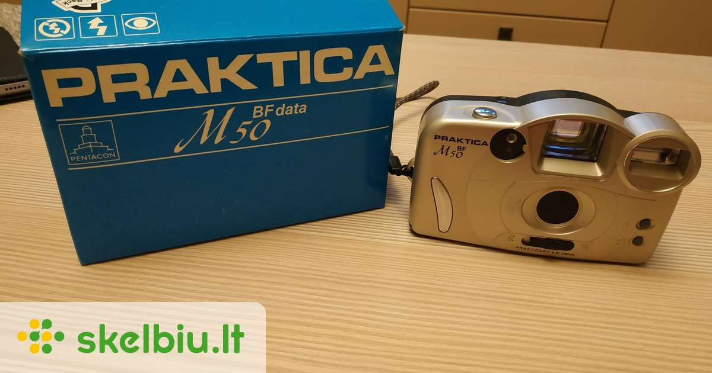

Welcome to Fotoaparatai
Fotoaparatai
2020.10.29 06:22Užsiregistruoti Prisijungti Pagalba Paieška FotoŽinios Straipsniai Skelbimai Forumas Terminai Gairės FotoTechnika Fotoaparatai Fotoaparatų testai Objektyvai Parduotuvės Foto Kursai Vienos dienos kursai Kursų kalendorius Registruotis Nuotraukos FotoSrautas FotoMokykla Draugams FotoKonkursai Grupės Žemėlapis Fotografai Bendruomenė Profesionalų paslaugos Įdomūs fotografai Žemėlapis Fotoaparatai
eFoto rekomenduojami
Kompaktiški: Maži: 250 € , 400 € , 600 € , 900 € Vidutiniški: 250 € , 400 € , 600 € , 900 €Keičiamų objektyvų fotoaparatai:
Sisteminiai : 600 € , 900 € , 1500 € , 2500 € Veidrodiniai: 600 € , 900 € , 1500 € , 2500 €
Paieška
Paprasta paieška Parametrų paieška Modelių palyginimasSiūlome perskaityti
Kokį fotoaparatą pirkti? Naujoko gidas+ Vizualus gidas naujokams
+ eFoto rekomenduojami fotoaparatai
Geriausiai įvertintų skaitmeninių fotoaparatų lentelė .
Parduotuvės eFoto.lt bendradarbiauja su šiomis patikimomis parduotuvėmis
www.fotoaparatas.lt www.fokusta.lt www.foto-shop.ltwww.fotofabrikas.lt www.varle.lt
Firmos
Verta žvilgtelti Patariame: rekomenduojami fotoaparatai Įdomiausi mėnesio straipsniai FotoBitės išsaugos gražiausius Jūsų prisiminimusRekomenduojami fotoaparatai
Kompaktiški: Maži: 250 € , 400 € , 600 € , 900 € Vidutiniški: 250 € , 400 € , 600 € , 900 €Keičiamų objektyvų fotoaparatai:
Sisteminiai : 600 € , 900 € , 1500 € , 2500 € Veidrodiniai: 600 € , 900 € , 1500 € , 2500 € Kokį fotoaparatą pirkti? Naujoko gidas
+ Vizualus gidas naujokams
+ eFoto rekomenduojami fotoaparatai Modelių palyginimas Parametrų paieška Objektyvų katalogas Pagalba Pagalba (DUK) Nuotraukų įdėjimas Vertinimo sistema Autorių teisės Apie eFoto Apie eFoto.lt Taisyklės Kontaktuoti Katalogas Fotoaparatai Objektyvai Pro fotografai Paremti eFoto eFoto serverio išlaikymas šį mėnesį kainuoja 169.40€ . . Dabar surinkta 186.00€ . Paremk eFoto, užsakyk paslaugą NARYS .
